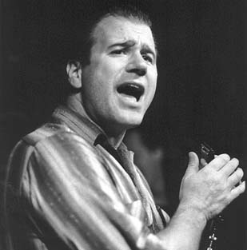

Музыка Гэри Примича - это невероятная смесь. И поразительнее всего то, что в ней органично сочетаются, казалось бы, несмешиваемые элементы разных стилей и традиций игры на губной гармонике. Такое искусство не приходит за один день. Гэри Примич родился в 1958 году в Чикаго, в блюзовой столице мира. По его словам, никогда не хотел быть «упертым блюзменом» - просто хотел играть. Но как юному чикагскому музыканту избежать блюзовых флюидов, пронизывающих здесь и воздух, и улицы, и стены? В 1991 году он выпустил первый сольный альбом, качественный, но не ставший сенсацией. С тех пор были годы непрерывных гастролей и запись еще восьми альбомов, создавших ему реноме одного из ярчайших исполнителей на губной гармонике. Пройдя череду музыкальных увлечений, он все-таки остался на блюзовой стезе. Но уж чего только нет в его блюзе!Рядом с подстегивающим ритмом модного нынче свинга Западного побережья, слышится и гипнотически неловкая поступь мемфисского блюза Хаулина Вулфа. Упертый жаркий техасский шафл соседствует с расслабленным кул-джазом. Блюзовые стандарты редко звучат в программах Примича. В богатом наследии жанра он предпочитает выискивать редкости. И прекрасно сочиняет сам, избегая рутины вечных блюзовых трех строчек, - он конструирует мелодию по-своему, при этом не конфликтуя с традицией. На московских гастролях в его блюз-бэнде на гитаре играет еще один замечательный музыкант: Шорти (Коротышка) Ленуар. Они дополняют друг друга. Открещиваясь от электрогитарного пафоса блюз-рока, Ленуар предпочитает играть понотные короткие соло, выразительные и нестандартные, как и игра Примича на гармонике. Он может создавать изысканную интеллигентную гитарную вязь, напоминая Хэрба Эллиса... И вдруг подпустить такой оборот, словно у него пальцы путаются в струнах, как у Хьюберта Самлина. Самое поразительное, что это не режет ухо ни любителям утонченного джаза, ни почитателям блюза «от миссисипской сохи». И, разумеется, удовольствие в квадрате получат те, кому по душе и то и другое.
Говорят, записи Гэри Примича хороши, но его концерты еще лучше, благодаря настоящему сценическому драйву. Виртуозность и энергичность - сочетание редкое, но для Примича - вполне естественное. 22 января музыкант выступит в клубе «Б2», 23-го - в московском «Ритм-н-блюз кафе», 24-го даст мастер-класс в клубе B.B.King и концерт в клубе «Форте».
Андрей Евдокимов для Еженедельного Журнала